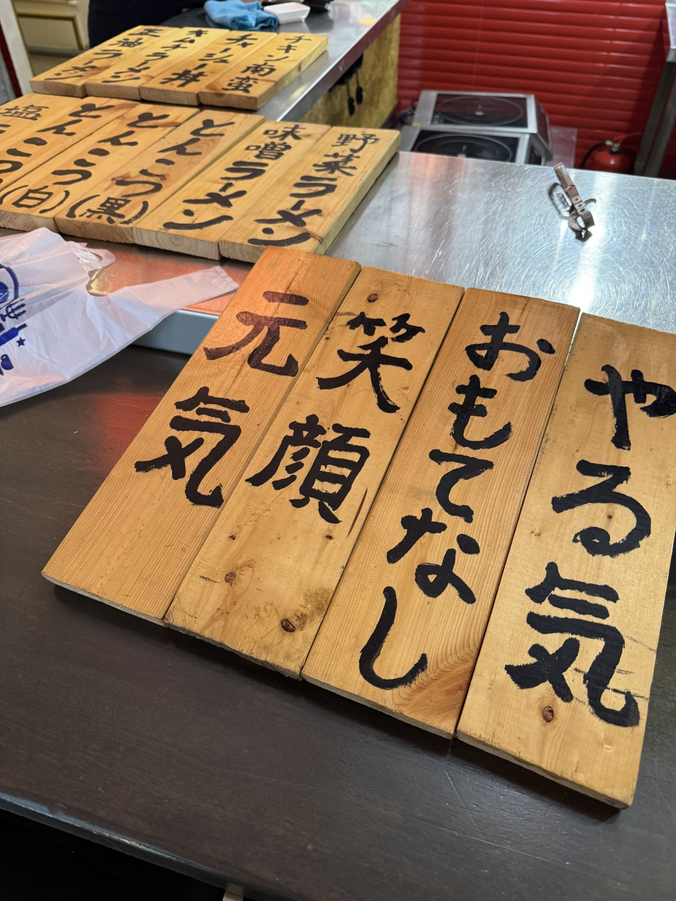
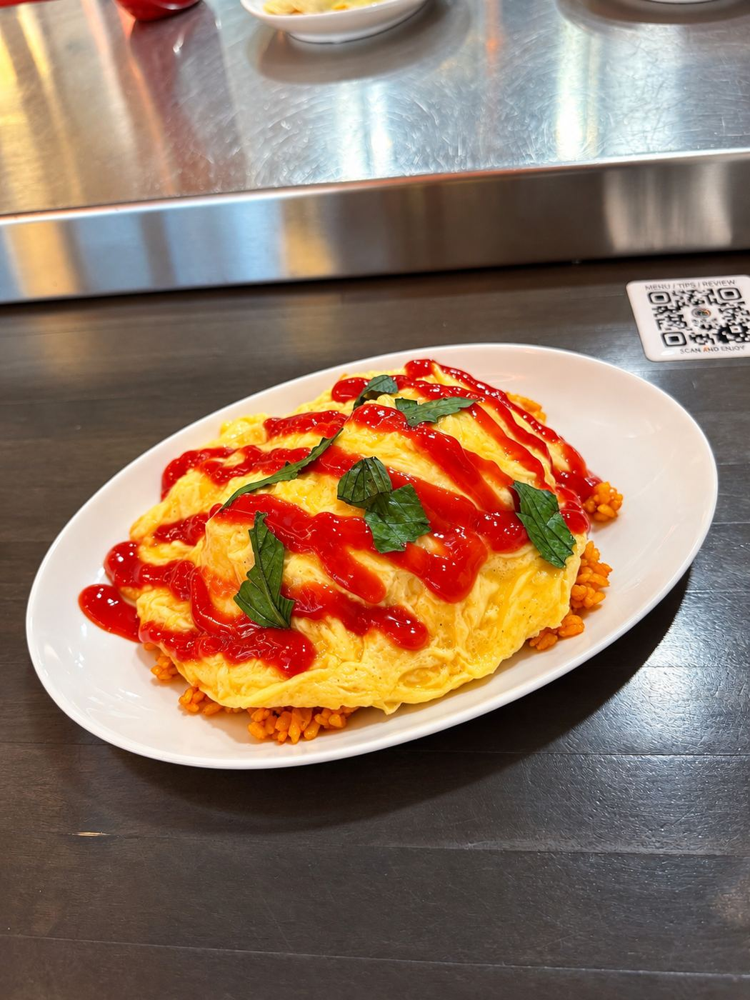
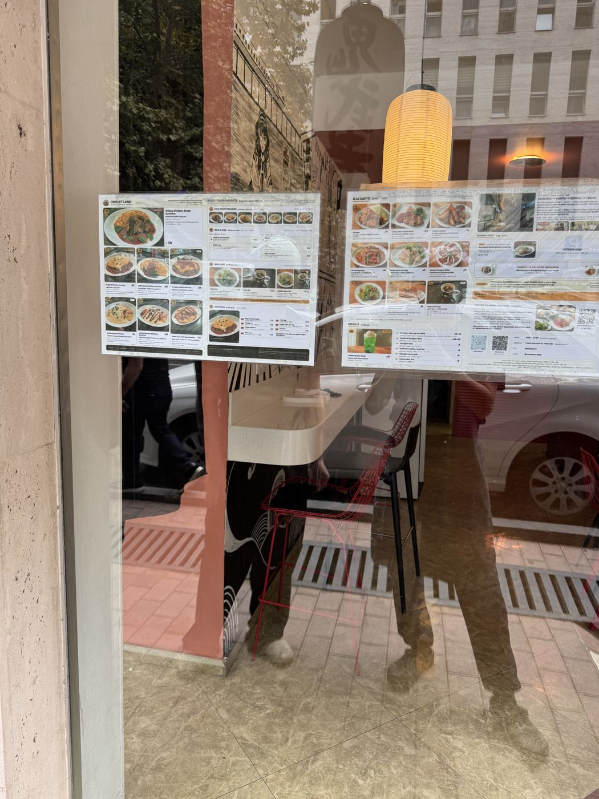
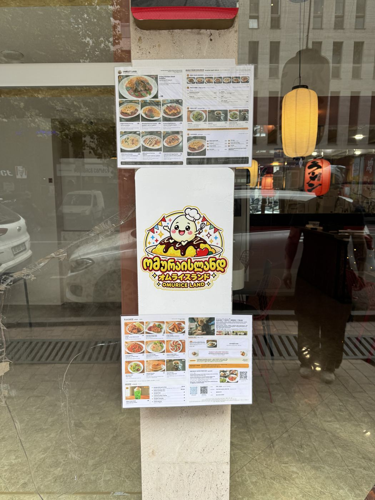

RAMENOnimusha 鬼武者
Japanese ramen made to order: shio, shoyu, miso, and a Georgian twist — Shkmeruli ramen.
Menu →
Ramen, Japanese curry, omurice and beef sushi at one address. Open every day 13:00–22:00.
Order from any kitchen and share at the same table.

Japanese ramen made to order: shio, shoyu, miso, and a Georgian twist — Shkmeruli ramen.
Menu →Rich, slow-simmered Japanese curry. Try the Katsu Curry — a crispy cutlet over golden curry and rice.
Menu →
Fluffy omelette over seasoned rice, by the chef who won Omurice Stadium 2019 in Hokkaido. Also seared roast-beef sushi.
Menu → Order on Wolt →



Japan Food Hubは、トビリシで日本人が実際にお店を出し、会社・口座・就労許可の手続きを自分たちで通ってきた場所です。その経験を、そのままお手伝いに使っています。
このお店を教室にして、SNS・動画・翻訳・接客を本物の仕事で学ぶプログラム。2027年1月・2月・3月に各5名。
くわしく見る →会社設立・物件・人・毎月の税務まで、私たちが通った道をそのままご案内します。まずは現地の視察から。
LINEで相談する →3店の大皿、目の前で仕上げるミニオムライス、ジョージアワイン。1人₾55・6名から・2日前までに予約。14名まで貸切できます。
WhatsAppで予約 →トビリシ在住の日本人が、窓口への付き添いから日本語でサポートします。初回30分は無料です。
サービスと料金 →Japan Food Hub is run by Japanese owners. For group dinners, events, weddings or partnerships, message us on WhatsApp.